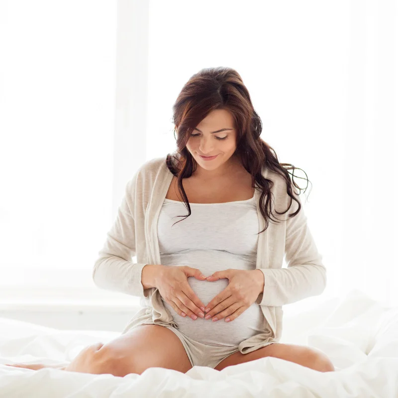

Hubnutí po porodu: bezpečně a s rozumem
Právě jste se stala maminkou – a vaše tělo si prošlo neuvěřitelnou proměnou. Je přirozené chtít se vrátit do formy, ale je důležité dát si čas. Těhotenství a porod jsou pro organismus obrovská zátěž a zotavení vyžaduje trpělivost. Žádné „zázračné diety", žádný tlak na rychlé výsledky.
V tomto článku se podíváme na to, jak nastartovat hubnutí po porodu bezpečně – i při kojení –, kdy je vhodné začít cvičit, jak si nastavit stravu a proč je nejdůležitější laskavost k sobě samé.

Co se děje s tělem po porodu
Během těhotenství žena přibere průměrně 10–16 kg. Část těchto kilogramů zmizí brzy po porodu (miminko, placenta, plodová voda, nadbytečná tekutina), ale většina přebytečného tuku zůstává a jeho odbourání vyžaduje čas.
Časový horizont
- První 2 týdny – rychlý pokles váhy (5–7 kg) díky ztrátě tekutin a hmotnosti miminka
- 6 týdnů po porodu – šestinedělí, tělo se zotavuje, děloha se zavinuje
- 3–6 měsíců – období, kdy většina žen začíná aktivněji hubnout
- 9–12 měsíců – realistický cíl pro návrat k předtěhotenské váze
Důležité: nejhubnete pro Instagram, ale pro sebe a své zdraví. Každá žena je jiná a každý porod je jiný. Porovnávání s ostatními maminkami je zbytečné a často škodlivé.
Hubnutí při kojení
Kojení je často prezentováno jako „automatický hubnutí zdarma". A je to částečně pravda – kojení spaluje přibližně 300–500 kcal denně. Problém je, že mnohé maminky mají při kojení výrazně větší chuť k jídlu, takže se kalorický deficit nevytvoří automaticky.
Pravidla hubnutí při kojení
- Nejezte pod 1 800 kcal denně – nižší příjem může snížit produkci mléka a ohrozit příjem živin pro miminko
- Maximální deficit 300–400 kcal – pomalé, ale bezpečné hubnutí (0,5 kg týdně)
- Dostatek bílkovin – minimálně 1,2 g/kg hmotnosti denně
- Pijte dostatek tekutin – kojení zvyšuje potřebu tekutin o 500–700 ml denně
- Nedrzte žádné extrémní diety – ketogenní, bezlepkové a jiné restrikční diety mohou ochuzit mateřské mléko
Co naopak pomáhá
- Pravidelné stravování – 3 hlavní jídla + 2 svačiny
- Příprava jídel dopředu (meal prep) – s miminkem nemáte čas vařit od nuly
- Zdravé svačiny v dosahu – ořechy, ovoce, tvaroh místo sušenek
Jak nastartovat hubnutí po porodu
Klíčem k úspěšnému hubnutí po porodu není drastická změna, ale postupné zavádění malých návyků. Tady je postup, který funguje:
Krok za krokem
- Počkejte na souhlas lékaře – minimálně 6 týdnů po přirozeném porodu, 8–12 týdnů po císařském řezu
- Začněte procházkami – s kočárkem, 20–30 minut denně. Chůze je skvělý způsob hubnutí a snižuje riziko poporodní deprese.
- Upravte stravu – ne radikálně, ale promyšleně. Více zeleniny, bílkovin, méně zpracovaných potravin.
- Zapojte pánevní dno – Kegelovy cviky jsou základ pro návrat k jakémukoli cvičení
- Postupně přidávejte pohyb – po 3–4 měsících jóga, pilates, lehký silový trénink
- Hlídejte si spánek – vím, snadněji řečeno než uděláno. Ale chronický nedostatek spánku zvyšuje chuť k jídlu a brzdí hubnutí.
Hubnutí břicha po porodu
Břicho po porodu je téma, které trápí většinu maminek. Je důležité vědět, že břicho se nevrátí do původního stavu za pár týdnů – děloze trvá 6–8 týdnů, než se zavinuje na původní velikost, a přerozdělení tuku vyžaduje měsíce.
Diastáza – na co si dát pozor
Během těhotenství se přímé břišní svaly roztáhnou, což je zcela normální. U některých žen se ale po porodu samy nespojí – tomuto stavu se říká diastáza. Než začnete s jakýmkoli břišním cvičením, nechte si diastázu vyšetřit (gynekolog nebo fyzioterapeut).
- Pokud máte diastázu – vyhněte se klasickým sed-lehům, plankům a zkracovačkám. Zaměřte se na hluboký stabilizační systém pod vedením fyzioterapeuta.
- Pokud diastázu nemáte – postupně zapojujte břišní svaly: nádech do břicha, aktivace transverzálního svalu, pak plank, nakonec zkracovačky.
Cviky vhodné po porodu
- Kegelovy cviky (pánevní dno)
- Dechová cvičení s aktivací hlubokých svalů
- Mostek (bridge) – zpevňuje hýždě i střed těla
- Chůze – šetrná, ale účinná
- Po zhojení: jóga, pilates, plavání
Shrnutí: hubnutí po porodu
- Dejte si minimálně 6 týdnů na zotavení, než začnete aktivně hubnout
- Při kojení nikdy nejděte pod 1 800 kcal denně
- Začněte procházkami a postupně přidávejte intenzitu
- Nechte si vyšetřit diastázu před břišním cvičením
- Realistický cíl: návrat k předtěhotenské váze za 9–12 měsíců
- Buďte k sobě laskavé – právě jste vytvořily nový život
Spočítejte si své aktuální BMI a sledujte svůj pokrok v čase. Jestli vás zajímá, kolik kalorií byste měla přijímat, podívejte se na článek o počítání kalorií při hubnutí.